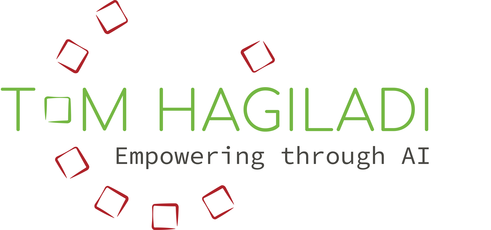
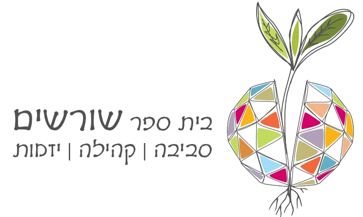
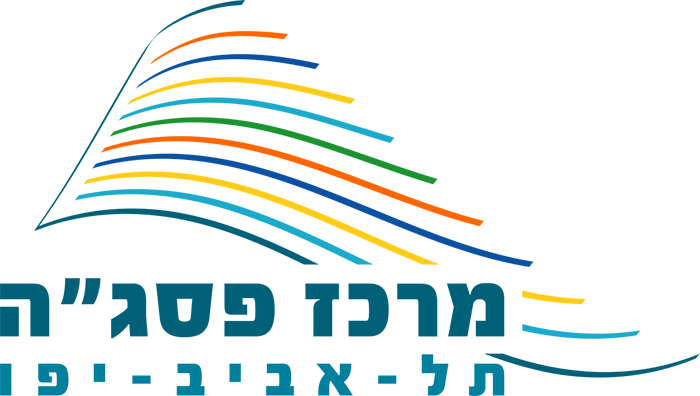
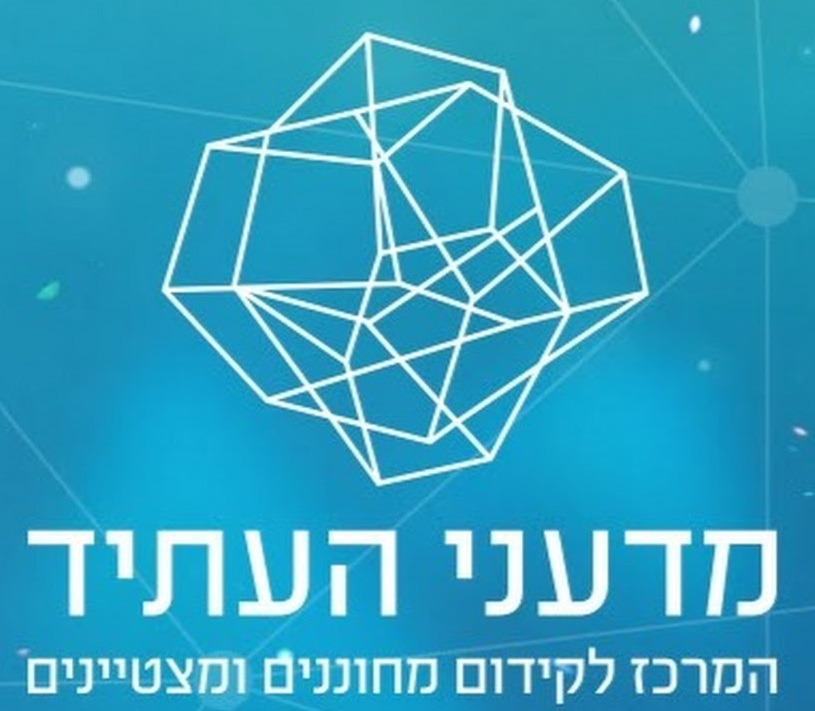
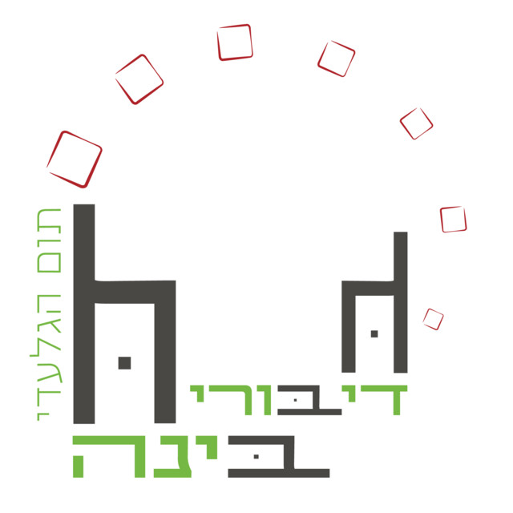
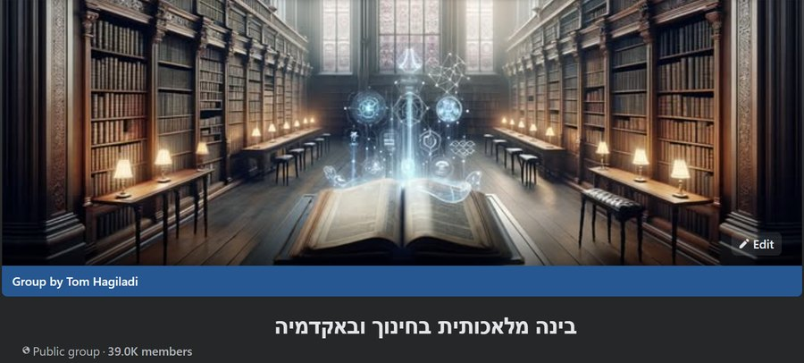
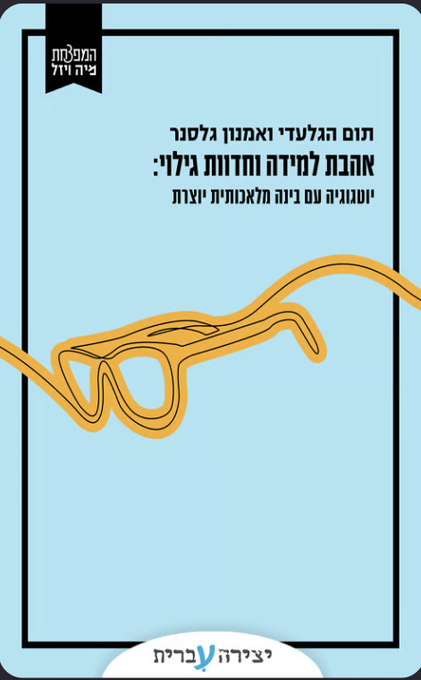

תום הגלעדי · יום שלישי, 24.11.2026 · מפגש 1 מתוך 4

קצת עליי
איש חינוך עשרים שנה: מורה, מייסד ומנהל בית הספר "שורשים", סגן מנהל מרכז פסג"ה תל אביב-יפו, ואחראי הפן החברתי-רגשי במדעני העתיד.



מאז 2023 עוסק רק בממשק שבין בינה מלאכותית לארגונים לומדים: חינוך, אקדמיה, ועסקים שעובדים עם סוכנים.
מגיש את הפודקאסט "דיבורי בינה", מנהל את קהילת "בינה מלאכותית בחינוך ובאקדמיה" (כ-40 אלף חברים), וכתב עם פרופ' אמנון גלסנר את הספר "אהבת למידה וחדוות גילוי".



ובבת ים: ארבעה מפגשים, וכל זוג יוצא עם כלי משלו.
פתיחהסוכן והממשקשליטה וביטחוןאיך עובדיםתרגול
לפני הכול: כל אחת מראה תשובה ראשונה
פתחו את אפליקציית קלוד, ולחצו על Code. לידה יכול להופיע Claude, או Chat ו-Cowork. זה תלוי בחשבון, ושתי הצורות תקינות.
הורידו את ערכת התרגול מהדף (הברקוד), וחלצו אותה לשולחן העבודה.
סשן חדש, ובחרו את תיקיית הערכה.
כתבו: "שלום, מה יש בתיקייה הזו?" - וכשמופיעה תשובה, הרימו יד.
לא עובד? אין Code, או מופיע "שדרוג" - המנוי לא פעיל, או שנכנסתן עם חשבון אחר. מבקש קוד במייל - זו הכניסה הרגילה. לא מוצאות את התיקייה - נוריד יחד.
הדף והערכה
פתיחהסוכן והממשקשליטה וביטחוןאיך עובדיםתרגול
ארבעה מפגשים, נסיעה אחת
היום · 24.11
מכירות את הכלי
את התיקייה, את השליטה, ובונות כלי ראשון.
1.12 · 29.12 · 11.1
האפליקציה שלכן
כל זוג בונה את האפליקציה שלו, לכאב מנהלתי אמיתי.
שיעור נהיגה: אני מלמד לנהוג. כל אחת קובעת לאן.
פתיחהסוכן והממשקשליטה וביטחוןאיך עובדיםתרגול
צ'אט מסביר, סוכן עושה
צ'אט
סדר את הקבצים בתיקייה הזו לפי נושא, ותן לכל קובץ שם ברור.
בשמחה! כך עושים את זה: פתח את התיקייה, צור תיקייה לכל נושא, גרור כל קובץ למקום, ושנה שמות לפי התוכן. אם תדביק כאן את רשימת הקבצים, אציע שמות.
המחשה
סוכן
סדר את הקבצים בתיקייה הזו לפי נושא, ותן לכל קובץ שם ברור.
קראתי 15 קבצים
הצעתי 4 תיקיות לפי נושא
יצרתי את התיקיות והעברתי את הקבצים
נתתי לכל קובץ שם ברור
שמרתי קובץ "מה עשיתי"
המחשה
ההבדל הוא בין מישהו שמסביר לכן איך לעשות משהו, לבין מישהו שיושב ועושה אותו מולכן.
פתיחהסוכן והממשקשליטה וביטחוןאיך עובדיםתרגול
איך קלוד קוד בנוי
את
נותנים משימה במילים
המודל, "המוח"
בשרתים של אנתרופיק. חושב ומחליט מה לעשות
←⇄
המעטפת, "הידיים"
קלוד קוד עצמו: נותן למודל כלים, שומר על ההרשאות ומנהל את הזיכרון של השיחה
agentic harness
⇅
התיקייה במחשב
הקבצים שהוא קורא ועורך, והפקודות שהוא מריץ
קבצי ההוראות
מה שהוא קורא בתחילת כל שיחה
המודל חושב. המעטפת פועלת. אתן מחליטות מה מותר.
פתיחהסוכן והממשקשליטה וביטחוןאיך עובדיםתרגול
מפה של המסך
זו מפה, לא צילום. המסך משתנה מגרסה לגרסה ומחשבון לחשבון.
1ChatCoworkCode
+ New session 2
Scheduled
Customize
Sessions 3
What should we build?
Type a task... 5
+ערכת תרגול ▾4Opus 5.5 · Medium6Auto◯7
1הלשוניות. אנחנו ב-Code
2סשן חדש
3הסשנים שלכן
4התיקייה שעובדים בה
5תיבת הכתיבה, והפלוס לצירוף קבצים
6המודל ורמת המאמץ
7מצב ההרשאה, וטבעת השימוש
פתיחהסוכן והממשקשליטה וביטחוןאיך עובדיםתרגול
סשן חדש, ובחירת תיקייה
01
New session, או Ctrl+N
←
02
בוחרים תיקייה. בפעם הראשונה קופץ חלון אישור
←
03
סביבה: Local. Worktree לא מסומן
←
04
כל סשן זוכר את התיקייה שלו
תיקייה אחת לכל נושא. עוד נחזור לזה.
פתיחהסוכן והממשקשליטה וביטחוןאיך עובדיםתרגול
מודל, מאמץ, וכמה נשאר
המודל
Opus 5.5 - ברירת המחדל, וההמלצה. Fable 5.2 - בתשלום נוסף, גם במושב צוות.
המאמץ
בינוני - ברירת המחדל וההמלצה. גבוה יותר: יסודי יותר, איטי יותר, ושורף מכסה מהר יותר.
טבעת השימוש
חלון של 5 שעות מההודעה הראשונה, ותקרה שבועית. במושב צוות: פי 1.25 ממנוי פרו בכל חלון.
מד ההקשר
מתאפס בכל סשן חדש. כשהוא מתמלא, קלוד מסכם לבד וממשיך.
בסדנה: Opus 5.5, מאמץ בינוני. לא נוגעות.
פתיחהסוכן והממשקשליטה וביטחוןאיך עובדיםתרגול
תרגול 1 · כ-10 דקות
חימום: מה יש בתיקייה?
הדביקו"עבור על התיקייה הזו ועל כל תיקיות המשנה שלה, והכן לי טבלה: שם הקובץ, מה יש בו בשורה אחת, ולמה הוא יכול לשמש. אל תשנה שום קובץ."
ואז"פתח את קובץ השיבוצים, וספר לי במשפט אחד מה יש בכל גיליון."
הצלחתן אם
מופיעה טבלה עם שורה לכל קובץ, ומשפט על כל אחד מחמשת בתי הספר.
סיימתן מוקדם?
"איזה בית ספר הכי עמוס, ובאיזה יום?"
פתיחהסוכן והממשקשליטה וביטחוןאיך עובדיםתרגול
מי מחליט: מצבי ההרשאה
המצב
מה קורה
Manual
שואל אתכן לפני כל שינוי בקובץ, ולפני כל פקודה.
Accept edits
יוצר, משנה, מעביר ומוחק קבצים בתוך התיקייה בלי לשאול. מחוץ לתיקייה, או לפני פקודה כמו התקנת תוכנה, הוא עוצר ושואל.
Plan
קורא ומתכנן. לא משנה כלום עד שמאשרים.
Auto
פועל לבד, עם בדיקות בטיחות ברקע. כאן מתחילה כל שיחה חדשה.
Bypass permissions
בלי שום שאלה. מוסתר כברירת מחדל, ולא נוגעים בו.
"פקודה" היא פעולה שקלוד מריץ במחשב עצמו, מעבר לכתיבה בתוך קובץ: למשל להעביר קבצים בין תיקיות, להתקין תוכנה או להריץ סקריפט.
איך מחליפיםלחצו על המצב בשורה שמתחת לתיבה, או
Ctrl+Shift+M
ההמלצההתחילו משימה חדשה ב-
Plan
, קראו את התוכנית, ורק אז בצעו.
פתיחהסוכן והממשקשליטה וביטחוןאיך עובדיםתרגול
עוצרים וחוזרים אחורה
עצירה
כפתור העצירה, או
Esc
תיקון כיוון
בלי לעצור: כתבו הודעה ולחצו
Enter
חזרה אחורה
בתפריט של הודעה:
Rewind to here
. או
Esc
פעמיים כשהתיבה ריקה. בחרו מה להחזיר: את הקבצים, את השיחה או את שניהם.
מה לא חוזר: קבצים ששונו רק בהרצת פקודה, כמו העברה בין תיקיות. וגם פעולות בחוץ, כמו מייל שנשלח.
מקור: עמוד נקודות השמירה בתיעוד של אנתרופיק, נבדק ב-23.11.2026.
פתיחהסוכן והממשקשליטה וביטחוןאיך עובדיםתרגול
מה הכלי רואה, ומה יוצא החוצה
קלוד רואה את התיקייה שבחרתן, וכל מה שמתחתיה. יציאה ממנה דורשת אישור. התיקייה היא גבול, לא ארגז חול.
מה שקלוד קורא נשלח לאנתרופיק. הוא קורא לפי הצורך, לא את כל התיקייה בבת אחת.
אצלכן, בחשבון צוות
המידע לא משמש לאימון המודלים, ונשמר 30 יום.
ובכל זאת
בלי פרטים מזהים של תלמידים ומורים, לפי הנחיות משרד החינוך. ובלי סיסמאות בקבצים.
מקור: עמוד השימוש בנתונים בתיעוד של אנתרופיק, נבדק ב-23.11.2026.
הפסקה של 10 דקות
10:00
פתיחהסוכן והממשקשליטה וביטחוןאיך עובדיםתרגול
תיקייה לכל נושא
קלוד רואה תיקייה אחת: זו שבחרתן, וכל מה שמתחתיה.
צר וממוקד עדיף: תיקייה לכל פרויקט, ולא "כל המסמכים שלי".
שמות קבצים ברורים: הוא מוצא מהר יותר ומבין טוב יותר.
בתיקייה נשמרות גם ההוראות של הפרויקט. נראה בעוד רגע.
מעכשיו: תיקייה לכל פרויקט שלכן. "שיבוצים", "לוח חודשי".
כל המסמכים בתיקייה אחת
המסמכים שלי
סופי סופי 2
מסמך1
חדש (3)
ללא שם
...ועוד 400
תיקייה לכל פרויקט
שיבוצים
שיבוצים - דצמבר.xlsx
CLAUDE.md
לוח חודשי
לוח - דצמבר.docx
פתיחהסוכן והממשקשליטה וביטחוןאיך עובדיםתרגול
איך קלוד זוכר
ספר החוקים
CLAUDE.md
קובץ בתיקייה, שקלוד קורא בתחילת כל סשן. כותבים בו מי אתן, ומה הפרויקט. עד 200 שורות.
המחברת
זיכרון אוטומטי
"תזכור ש..." נכתב שם. דלוק כברירת מחדל, וקלוד מחליט מה לשמור.
השולחן
השיחה עצמה
נעלמת בסשן הבא. מה שחשוב - לספר החוקים.
מקור: עמוד הזיכרון בתיעוד של אנתרופיק, נבדק ב-23.11.2026.
פתיחהסוכן והממשקשליטה וביטחוןאיך עובדיםתרגול
איך מבקשים מסוכן
מטרההקשרגבולותמתי זה מוכן
דוגמה"אני רוצה דף נפרד לכל בית ספר, שמראה רק את השיבוצים שלו.הקובץ: שיבוצים - דצמבר, גיליון לכל בית ספר. הדפים יגיעו למנהלות.אל תשנה את קובץ האקסל, ואל תמציא נתונים.זה מוכן כשכל בית ספר רואה רק את שלו, ויש דף ראשי עם קישורים. לפני שאתה מתחיל, שאל אותי שאלות."
ובסוף: בדקו. גם סוכן טועה, ובביטחון מלא.
פתיחהסוכן והממשקשליטה וביטחוןאיך עובדיםתרגול
תהליך בחמישה צעדים
מתחילות ב-Plan: קלוד מתכנן, ולא נוגע בשום דבר.
קוראות את התוכנית, ומתקנות במילים.
מאשרות, וקלוד בונה.
על דוגמה קטנה קודם:שני בתי ספר, לא שלושים.
עובד? מרחיבות. ושומרות את מה שלמדנו בספר החוקים.
פתיחהסוכן והממשקשליטה וביטחוןאיך עובדיםתרגול
תרגול 2 · בזוגות · כ-25 דקות
כלי ראשון: כל בית ספר רואה רק את שלו
עברו ל-Plan, והדביקו את הבקשה מהדף.
קראו את התוכנית, תקנו במילים, ואשרו.
פתחו את הדפים ובדקו: בית ספר א' רואה רק את שלו?
בונוס: "הוסף לכל דף כפתור הדפסה, וצבע לפי סטטוס."
הבקשה"יש כאן קובץ שיבוצים של מדריכות בחמישה בתי ספר. אני רוצה דף נפרד לכל בית ספר, שמראה רק את השיבוצים שלו, ודף ראשי עם קישורים. אל תשנה את קובץ האקסל. קודם תכנן, ותראה לי."
סיימתן? חלופות בדף: לסדר תיקייה מבולגנת, או למצוא טעויות בטבלה.
כל זוג בוחר כאב מנהלתי אחד לשלושת המפגשים הבאים. שלוש דוגמאות למטה.
בתיקייה "הפרויקט שלנו", הדביקו"ראיין אותנו. שאל שאלה אחת בכל פעם על התהליך שאנחנו רוצות לשפר: מה עושים היום, מי משתמש בתוצר, ומה יהיה טוב. בסוף כתוב קובץ CLAUDE.md בתיקייה הזו, שמתאר את הפרויקט שלנו."
אקסל השיבוצים
גיליונות לכל בית ספר, וכל בית ספר רואה רק את שלו.
הלוח החודשי
מה שהיה בקנבה - לדף שמתעדכן, למנהלות ולמפקחות.
משהו אחר
כל משימה שחוזרת כל חודש, ולוקחת לכן שעות.
ככה מפגש 2 מתחיל עם קלוד שכבר מכיר את הפרויקט.
פתיחהסוכן והממשקשליטה וביטחוןאיך עובדיםתרגול
ולאן זה הולך: דף שמשתפים בקישור
אותו דף שבניתן היום - בקישור, למנהלת או למפקחת.
מתעדכן כשהנתונים משתנים, בלי לבנות אותו מחדש כל חודש.
את זה נבנה בשלושת המפגשים הבאים.
claude.ai/... (קישור לדף)
שיבוצים - בית ספר ג'
שלישי 09:45
צוות מדעים
פעיל
רביעי 11:30
רכזות שכבה
בתכנון
חמישי 08:00
צוות שפה
הושלם
המחשה, עם נתונים בדויים.
מה לוקחות, ומה עד 1.12
תיקייה אחת לכל נושא.
קודם Plan, אחר כך ביצוע.
דוגמה קטנה קודם.
Esc וחזרה אחורה - אבל לא על הכול.
בלי פרטים מזהים.
עד 1.12
הכינו את הקובץ האמיתי של הכאב שבחרתן. בלי שמות של תלמידים ומורים - אפשר להחליף שמות במספרים.